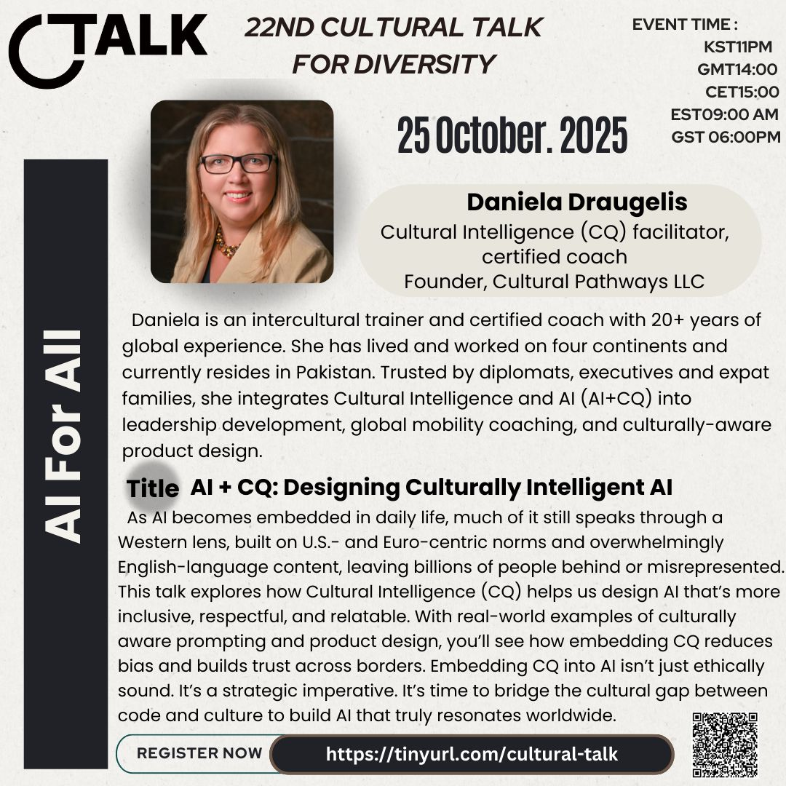
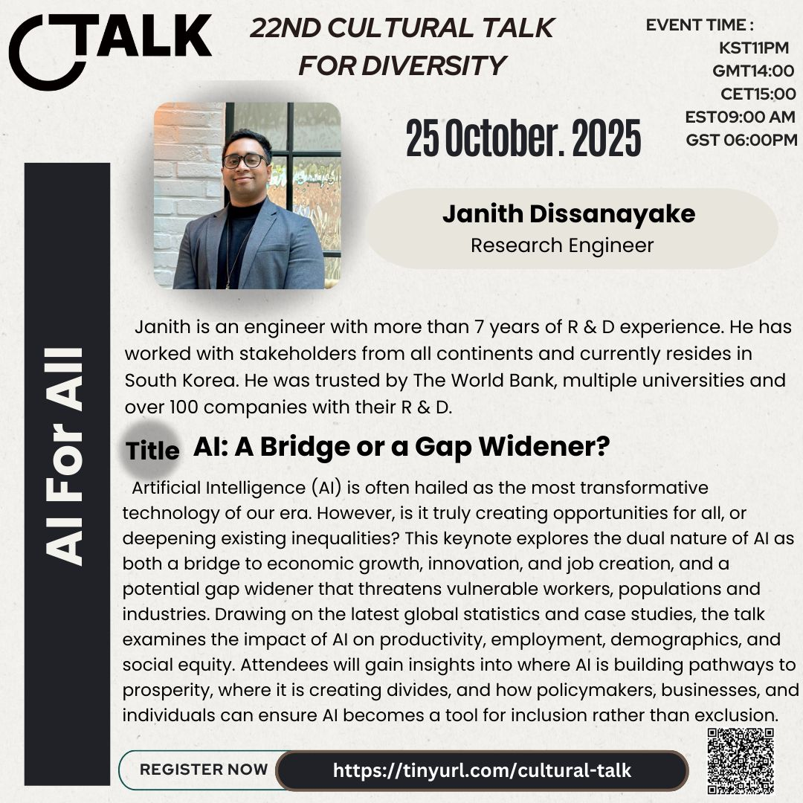

22nd Cultural Talk For Diversity
Theme: AI For All

Event Details
Date: 25 October, 2025
Time: 23:00 (KST) / 18:00 (GST) / 14:00 (GMT) / 16:00 (CET) / 10:00 (EDT) / 07:00 (PDT)
This event has already taken place and is now part of our archive.
Conference Overview
This session explored AI through the lens of inclusion, asking whether emerging technologies are truly being built for everyone. By bringing together perspectives on cultural intelligence, fairness, economic opportunity, and social risk, the event invited participants to think about what it takes to make AI more human-centered and more equitable.

Daniela Draugelis
Cultural Intelligence (CQ) facilitator, certified coach, Founder of Cultural Pathways LLC
Daniela is an intercultural trainer and certified coach with more than 20 years of global experience. Having lived and worked on four continents, she brings together Cultural Intelligence and AI to support leadership development, global mobility coaching, and culturally aware product design.
Topic: AI + CQ: Designing Culturally Intelligent AI
This talk explored how Cultural Intelligence can help shape AI that is more inclusive, respectful, and relatable across cultures. Through examples of culturally aware prompting and product design, it highlighted why reducing bias and building trust across borders is both an ethical and strategic priority.

Janith Dissanayake
Research Engineer
Janith is an engineer with more than seven years of R&D experience. He has worked with stakeholders across multiple continents and has supported projects for the World Bank, universities, and more than 100 companies.
Topic: AI: A Bridge or a Gap Widener?
This keynote examined the dual nature of AI as both a driver of economic growth and a possible source of widening inequality. Drawing on global statistics and case studies, it asked how governments, businesses, and individuals can help ensure AI becomes a tool for inclusion rather than exclusion.